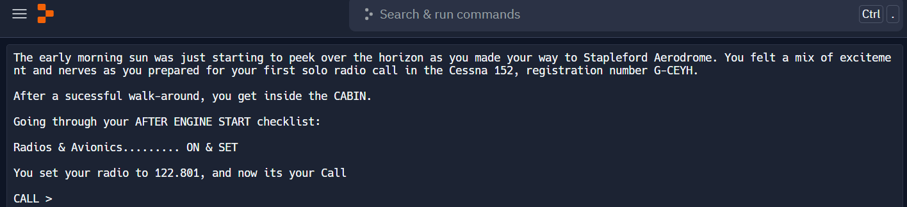

Crafted in the first week of my Python Challenge, this project aims to help pilots learn radio communication without burning fuel - it's a quirky eco-friendly win!
I've lost that code, but it was handy once. My daughter and her friend, both studying the same calculus topic, were the first and last adopters to test the miracle of my 'if true/false' automation. Note to interested VCs: The churn rate for the app is undefined because it is impossible to divide by zero
I managed to assemble my first real prototype in a single day, leveraging ChatGPT (the GPT-4 one) with text-to-text and text-to-image models. It served as a preliminary model for a digital video studio app - and let me tell you, it was no joke - The reall app was launched just a few months later. Builing this thing was a day of profound inspiration, a testament to the compelling force of programming and AI!
This was my first HTML webpage and the prototype for an app set to revolutionize job hunting, producing hundreds of cover letters at lightning speed. It's set to send shockwaves through the dusty corridors of HR bureaucracy, making them rethink their old-school talent-spotting ways.
This is my old dream come true since many years. I never imagined that I would be able to make a web-page - and yet, here we are! It's almost like I'm standing on the stage at the Oscars, ready to thank my non-existent cat for all the keyboard walks and the Internet for not crashing when I needed it the most!